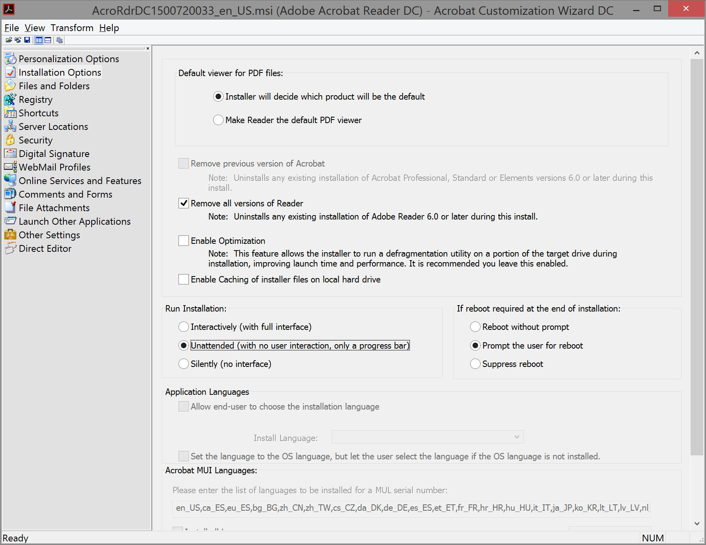
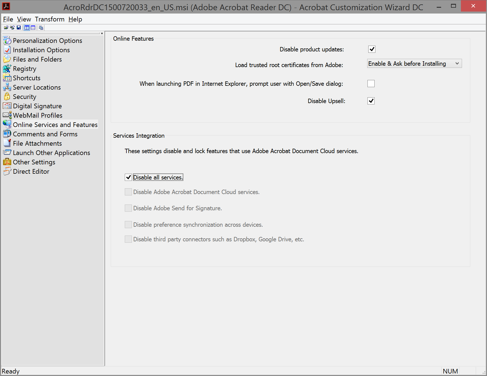

decrapifying Acrobat Reader DC
In an ideal world I’d simply eschew Adobe products and use Evince and/or PDF.js for my PDF requirements. Unfortunately I require Adobe’s COM Interop for some Windows developement projects I’m involved with. Although Acrobat Reader continues its march towards bloated, big-brother adware, Adobe does provide a customization wizard for enterprise deployments that allows much of cruft to be disabled, which can be used as follows:
Download:
- Adobe Customization Wizard DC Windows (both tracks)
- Acrobat Reader DC Continuous Track (Get the file for your language to save some space/time.)
Setup:
- Install the Adobe Customization Wizard.
- Run the wizard and select the Acrobat Reader DC msi file.
- Select the options you wish: (Also observe Adobe’s attention to HiDPI detail in the screenshots.)


 - Generate tranform (ADOBETRANSFORM.mst) file and save. (Create an empty setup.ini file if the wizard whines about it being missing.)
- At the command line run ‘msiexec /i ADOBEINSTALLER.msi TRANSFORMS=“ADOBETRANSFORM.mst”’.
- Open services.msc to disable the “Adobe Acrobat Update Service”.
- Open the task schedular to disable “Adobe Acrobat Update Task”.
- Open Acrobat Reader DC, open Preferences, General pane, under “Messages from Adobe” deselect “Show me messages when I launch Adobe Acrobat Reader DC” and select “Don’t show messages while viewing a document”.
- Uninstall Acrobat Customization Wizard DC.